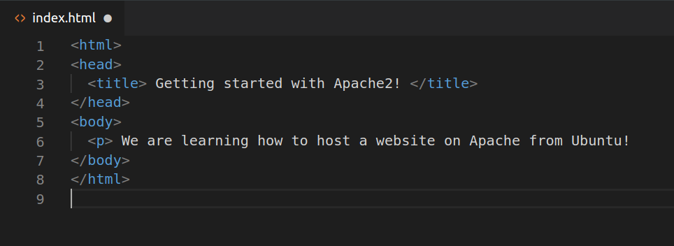
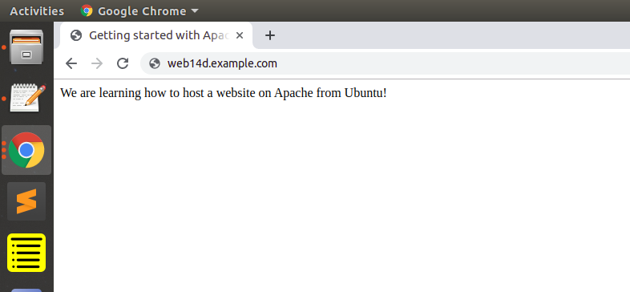

По подразбиране Apache се предлага с активиран основен сайт.
Можем да променим съдържанието му във /var/www/html или настройките, като редактираме неговия виртуален хост файл,
намиращ се в /etc/apache2/sites-enabled/000-default.conf.
Можем да модифицираме как Apache обработва входящите заявки и да имаме множество сайтове,
работещи на един и същ сървър, чрез редактиране на неговия файл за виртуални хостове.
Нека създадем директория в
/var/www/ за нашия уебсайт:
🐼user@ubuntu:~$ 🍓 sudo mkdir /var/www/web14d
Кръстихме нашия сайт web14d, но всяко име ще работи, стига да го посочим в конфигурационния файл на виртуалните хостове по-късно.
Сега, когато имаме директория, създадена за нашия сайт, нека да имаме HTML файл начална страница в него.
Нека влезем в нашата новосъздадена директория и да я създадем:
🐼user@ubuntu:~$ 🍓 cd /var/www/web14d/
🐼user@ubuntu:/var/www/web14d$ 🍓 vim index.html
Нека този файл има следното съдържание:

Нека създадем VirtualHost файл, така че той да се показва, когато въвеждаме web14d.example.com.
Използваме default конфигурацията и VirtualHost файла на Apache www.example.com.
🐼user@ubuntu:~$ 🍓 cd /etc/apache2/sites-available/
🐼user@ubuntu:/etc/apache2/sites-available$ 🍓 sudo cp 000-default.conf web14d.conf
🐼user@ubuntu:/etc/apache2/sites-available$ 🍓 sudo vim web14d.conf
Трябва да имаме имейла си в ServerAdmin, така че потребителите да могат да се свържат с вас в случай, че Apache срещне някаква грешка:
ServerAdmin user@mail.com
Също така искаме директивата DocumentRoot да сочи директорията, на която са хоствани файловете на нашия сайт:
DocumentRoot /var/www/web14d/
Файлът по подразбиране не идва с директива ServerName, така че ще трябва да го добавим и дефинираме, като добавим този ред под последната директива:
ServerName web14d.example.com
Това гарантира, че хората стигат до подходящия сайт вместо до стандартния, когато въвеждат web14d.example.com.
Сега, когато приключихме с конфигурирането на нашия сайт, нека го активираме:
🐼 user@ubuntu:/etc/apache2/sites-available$ 🍓 sudo a2ensite web14d.conf
Enabling site web14d.
To activate the new configuration, you need to run:
systemctl reload apache2
🐼 user@ubuntu:/etc/apache2/sites-available$ 🍓 systemctl reload apache2
След като въведем
web14d.example.com в търсачката на браузъра ако крайният резултат е следният, вече можем да създаваме уебсайтове с Apache!
